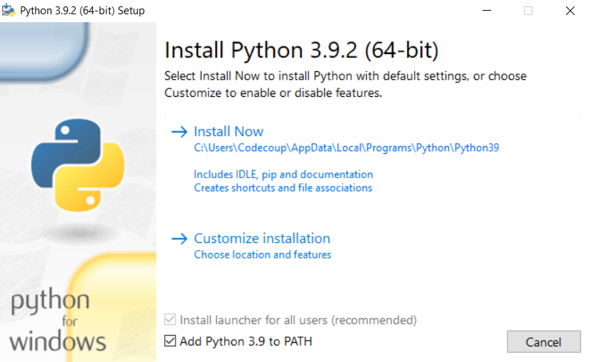
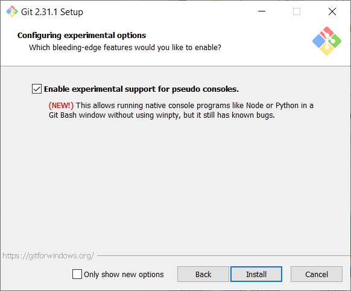
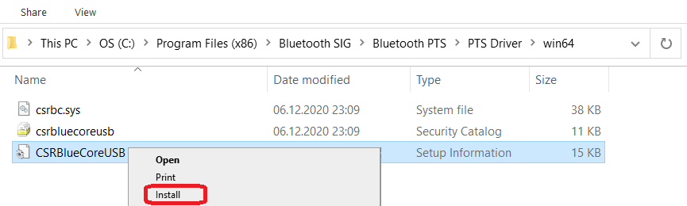

AutoPTS on Linux¶
Overview¶
This tutorial shows how to setup AutoPTS client on Linux with AutoPTS server running on Windows 10 virtual machine. Tested with Ubuntu 20.4 and Linux Mint 20.4.
You must have a Zephyr development environment set up. See Getting Started Guide for details.
Supported methods to test zephyr bluetooth host:
Testing Zephyr Host Stack on QEMU
Testing Zephyr Host Stack on native posix
Testing Zephyr combined (controller + host) build on Real hardware (such as nRF52)
- For running with QEMU or native posix, please visit:
Setup Linux¶
Install nrftools (only required in the actual hardware test mode)¶
Download latest nrftools (version >= 10.12.1) from site https://www.nordicsemi.com/Software-and-tools/Development-Tools/nRF-Command-Line-Tools/Download.
{kind=link}
After you extract archive, you will see 2 .deb files, e.g.:
JLink_Linux_V688a_x86_64.deb
nRF-Command-Line-Tools_10_12_1_Linux-amd64.deb
and README.md. To install the tools, double click on each .deb file or fallow instructions from README.md.
Setup Windows 10 virtual machine¶
Choose and install your hypervisor like VMWare Workstation(preferred) or VirtualBox. On VirtualBox could be some issues, if your host has fewer than 6 CPU.
Create Windows virtual machine instance. Make sure it has at least 2 cores and installed guest extensions.
Setup tested with VirtualBox 6.1.18 and VMWare Workstation 16.1.1 Pro.
Setup static IP¶
WMWare Works¶
On Linux, open Virtual Network Editor app and create network:
{kind=link}
Open virtual machine network settings. Add custom adapter:
{kind=link}
If you type ‘ifconfig’ in terminal, you should be able to find your host IP:
{kind=link}
VirtualBox¶
Go to:
File -> Host Network Manager
and create network:
{kind=link}
Open virtual machine network settings. On adapter 1 you will have created by default NAT. Add adapter 2:
{kind=link}
Windows¶
Setup static IP on Windows virtual machine. Go to
Settings -> Network & Internet -> Ethernet -> Unidentified network -> Edit
and set:
{kind=link}
Install Python 3¶
Download and install latest Python 3 on Windows. Let the installer add the Python installation directory to the PATH and disable the path length limitation.
{kind=link}

Install Git¶
Download and install Git. During installation enable option: Enable experimental support for pseudo consoles. We will use Git Bash as Windows terminal.
{kind=link}
Install PTS 8¶
On Windows virtual machine, install latest PTS from https://www.bluetooth.org. Remember to install drivers from installation directory “C:/Program Files (x86)/Bluetooth SIG/Bluetooth PTS/PTS Driver/win64/CSRBlueCoreUSB.inf”
{kind=link}
Note
Starting with PTS 8.0.1 the Bluetooth Protocol Viewer is no longer included. So to capture Bluetooth events, you have to download it separately.
Connect PTS dongle¶
With VirtualBox there should be no problem. Just find dongle in Devices -> USB and connect.
With VMWare you might need to use some trick, if you cannot find dongle in VM -> Removable Devices. Type in Linux terminal:
usb-devices
and find in output your PTS Bluetooth USB dongle
{kind=link}
Note Vendor and ProdID number. Close VMWare Workstation and open .vmx of your virtual machine (path similar to /home/codecoup/vmware/Windows 10/Windows 10.vmx) in text editor. Write anywhere in the file following line:
usb.autoConnect.device0 = "0x0a12:0x0001"
just replace 0x0a12 with Vendor number and 0x0001 with ProdID number you found earlier.
{kind=link}
{kind=link}
Flash board (only required in the actual hardware test mode)¶
On Linux, go to ~/zephyrproject. There should be already ~/zephyrproject/build directory. Flash board:
west flash
Setup auto-pts project¶
AutoPTS client on Linux¶
Clone auto-pts project:
git clone https://github.com/intel/auto-pts.git
Install socat, that is used to transfer BTP data stream from UART’s tty file:
sudo apt-get install python-setuptools socat
Install required python modules:
cd auto-pts
pip3 install --user wheel
pip3 install --user -r autoptsclient_requirements.txt
Autopts server on Windows virtual machine¶
In Git Bash, clone auto-pts project repo:
git clone https://github.com/intel/auto-pts.git
Install required python modules:
cd auto-pts
pip3 install --user wheel
pip3 install --user -r autoptsserver_requirements.txt
Restart virtual machine.
Running AutoPTS¶
Server and client by default will run on localhost address. Run server:
python ./autoptsserver.py
{kind=link}
Testing Zephyr Host Stack on QEMU:
# A Bluetooth controller needs to be mounted.
# For running with HCI UART, please visit: https://docs.zephyrproject.org/latest/samples/bluetooth/hci_uart/README.html#bluetooth-hci-uart
python ./autoptsclient-zephyr.py "C:\Users\USER_NAME\Documents\Profile Tuning Suite\PTS_PROJECT\PTS_PROJECT.pqw6" \
~/zephyrproject/build/zephyr/zephyr.elf -i SERVER_IP -l LOCAL_IP
Testing Zephyr Host Stack on native posix:
# A Bluetooth controller needs to be mounted.
# For running with HCI UART, please visit: https://docs.zephyrproject.org/latest/samples/bluetooth/hci_uart/README.html#bluetooth-hci-uart
west build -b native_posix zephyr/tests/bluetooth/tester/ -DOVERLAY_CONFIG=overlay-native.conf
sudo python ./autoptsclient-zephyr.py "C:\Users\USER_NAME\Documents\Profile Tuning Suite\PTS_PROJECT\PTS_PROJECT.pqw6" \
~/zephyrproject/build/zephyr/zephyr.exe -i SERVER_IP -l LOCAL_IP --hci 0
Testing Zephyr combined (controller + host) build on nRF52:
Note
If the error “ImportError: No module named pywintypes” appeared after the fresh setup, uninstall and install the pywin32 module:
pip install --upgrade --force-reinstall pywin32
Run client:
python ./autoptsclient-zephyr.py zephyr-master ~/zephyrproject/build/zephyr/zephyr.elf -t /dev/ACM0 \
-b nrf52 -l 192.168.2.1 -i 192.168.2.2
{kind=link}
At the first run, when Windows asks, enable connection through firewall:
{kind=link}
Troubleshooting¶
“After running one test, I need to restart my Windows virtual machine to run another, because of fail verdict from APICOM in PTS logs.”
It means your virtual machine has not enough processor cores or memory. Try to add more in settings. Note that a host with 4 CPUs could be not enough with VirtualBox as hypervisor. In this case, choose rather VMWare Workstation.
“I cannot start autoptsserver-zephyr.py. I always got error:”
{kind=link}
One or more of the fallowing steps should help:
Close all PTS Windows.
Replug PTS bluetooth dongle.
Delete temporary workspace. You will find it in auto-pts-code/workspaces/zephyr/zephyr-master/ as temp_zephyr-master. Be careful, do not remove the original one zephyr-master.pqw6.
Restart Windows virtual machine.